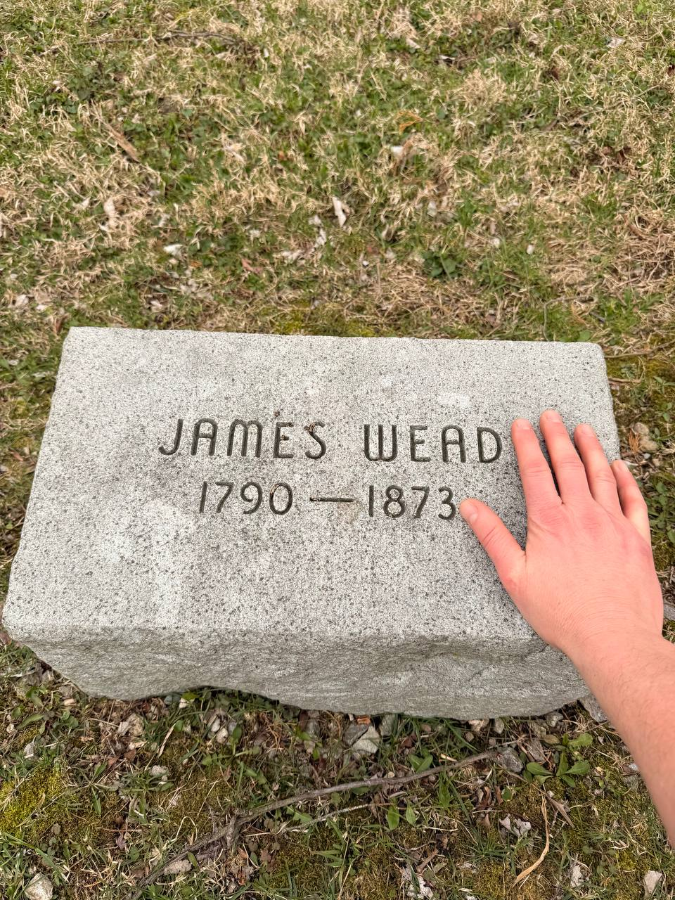
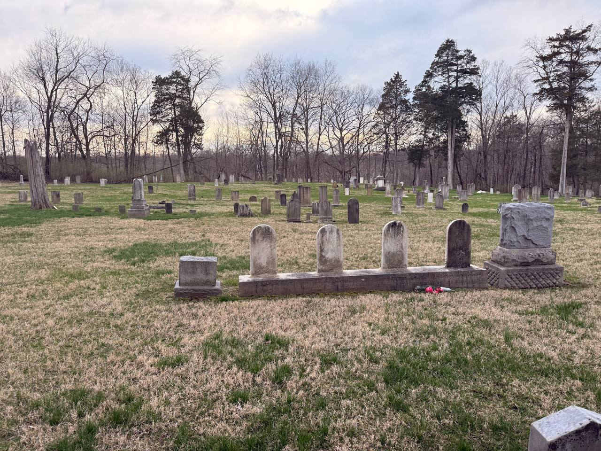
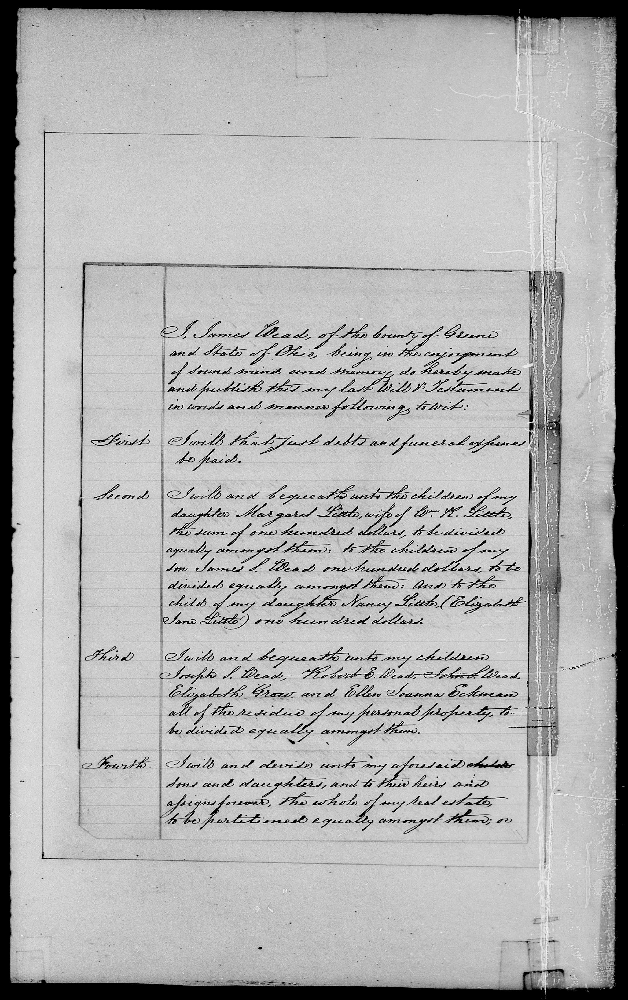

James Wead (1790–1873): War of 1812 Veteran and Greene County Patriarch
James Wead was born in 1790 into a family already marked by Scots-Irish Presbyterian migration, frontier settlement, and military duty. His grandfather John Wead had planted the family on the Pennsylvania frontier in the orbit of Rocky Spring Presbyterian and, by his own 1760 will, had money still due for service in the Pennsylvania Provincial Troops in 1758 and 1759 during the French and Indian War. His father, Ebenezer Wead, belonged to the Revolutionary generation, though the specific Lee's Legion "Ebenezer Wood" identity question is still being reviewed on Ebenezer's page. James, in turn, became the War of 1812 generation: another generation of Weads shaped by the same intertwined patterns of faith, migration, and arms. By the time he died in 1873, he had also become a link between two defining American eras: the Revolution that shaped his father’s world and the Civil War generation carried forward by his son, John Steele Wead.
The evidence trail for James is unusually rich. It includes a late-1812 marriage record, War of 1812 service evidence, Illinois bounty-land patents, Greene County probate records, church-history correspondence tied to Sugar Creek and Massie’s Creek, cemetery photographs, and a surviving handwritten family letter dated 1866. Taken together, these records show James not simply as a name in a pedigree, but as a man rooted in land, church, kinship, and military duty.
Born into the Revolutionary generation
James was born in Pennsylvania in 1790 and came west as a boy with the Wead family during the movement into the Ohio country around 1799. That placed him in southwestern Ohio while the region was still frontier country and several years before Ohio achieved statehood in 1803. In other words, James belonged to the first generation raised between the old Pennsylvania settlements and the new Greene and Montgomery County frontier.
The Presbyterian line mattered as much as the military one. James’s grandfather John lived beside Rocky Spring Presbyterian in Pennsylvania, fought in the provincial service that defended the Cumberland Valley, and tied the pay still owed for that duty to the family’s land in his 1760 will; his son Ebenezer carried the family westward; and church correspondence from Sugar Creek Presbyterian places the Weads in the wider Scots-Irish network that moved from Pennsylvania through Kentucky and into early Ohio. That broader movement helps explain why the Weads appear not only in land and military records, but also in the overlapping histories of Rocky Spring, Massie’s Creek, Sugar Creek, and Xenia’s Presbyterian congregations.
A later printed biographical sketch of James’s older brother Robert Wead strengthens that migration pattern. It states that Robert was born in York County, Pennsylvania, and that their father removed the family to Kentucky in 1797, where they remained for about two years before coming into Ohio around 1799. That family testimony lines up strikingly well with the church-history tradition that the Weads belonged to the Presbyterian migration stream moving from Pennsylvania through Kentucky into the Miami Valley.
On his wife’s side, family and cemetery research point toward another connection to the Revolutionary generation. James married Elizabeth Winter, and a photographed grave marker identifies Stephen Winter as a Revolutionary veteran. While the exact father-daughter link should still be presented cautiously until matched with a stronger primary record, the available evidence strongly suggests that James may have married into another family shaped by the same Scots-Irish Presbyterian frontier culture.
Marriage in late 1812
James’s marriage record survives in a church register and shows the surname variant Wade, a spelling that also appears later in his military bounty-land records. The entry records that he and Elizabeth Winter married on 26 October 1812, when James was about twenty-two years old.
The timing matters. Their marriage came in the opening phase of the War of 1812, just before James’s recorded service in Ohio and, according to the strongest current reconstruction, before his later regular-army enlistment. Even in this small record, the broader pattern of James’s life is visible: marriage, militia, migration, and frontier community all converged at once.
War of 1812 service
Current family research points to a two-stage War of 1812 service history. First, James appears as a corporal in Richard Sunderland’s Ohio militia company, serving in 1813 during the period when Ohio men were guarding the northwestern frontier. Second, the land-patent evidence ties a “James Wade” to service as a private in Schuyler’s Company, 29th U.S. Infantry. That regular-army identification is especially important because federal bounty land was tied to qualifying federal service, not simply to militia duty.
The surname drift from Wead to Wade is fully consistent with the family’s documentary history. The same phonetic variation appears in church, marriage, land, and family records across generations. Rather than weakening the case, it helps explain why James surfaces under slightly different spellings in the official record.
The 320-acre Illinois bounty tract
The most persuasive current interpretation of James’s bounty-land patent identifies his tract as 320 acres in the Illinois Military Tract: the south half of Section 9, Township 6 North, Range 6 West, in what is now Pilot Grove Township, Hancock County, Illinois, near present-day Burnside. That location places James among the War of 1812 veterans rewarded with federal land in western Illinois.
As with many veterans, there is no sign that James actually settled on the Illinois tract. The surviving record points the other way: he remained rooted in Ohio, and a family-held letter dated 31 May 1866 places him at Robert’s farm, showing that decades after the patent he was still living within the same Greene County family world of kin, farms, church ties, and probate records. The most likely explanation is that he treated the Illinois bounty land as an asset, assigning or selling it while continuing his established life in Ohio. Earlier family notes treated the bounty land as a 160-acre parcel, but the later and more detailed re-examination of the patent makes the 320-acre reading the better-supported interpretation.

Massie’s Creek, Sugar Creek, and the Greene County church world
The 2026 correspondence from Sugar Creek Presbyterian Church adds important local texture. Jane Jolly explained that Sugar Creek was originally yoked with Massie’s Creek Presbyterian Church until 1811, and later yoked with Xenia Presbyterian from 1811 to 1829. She further noted that the old Massie’s Creek burial ground survives as Stevenson Cemetery—the cemetery where James is buried.
That does not prove every stage of James’s formal church membership, but it does place him within a documented institutional world. Jolly’s theory, based on the church records and the family dates, is that the Wead/Wade family likely attended Massie’s Creek and perhaps later Xenia Presbyterian. That is a careful and useful conclusion: not absolute proof of every pew James occupied, but historically grounded evidence that his family stood inside the very congregational network that anchored early Greene County Presbyterian life.
In that sense, James’s Presbyterian roots were not a loose background detail but an inherited family world. The line runs from Ulster and Rocky Spring in his grandfather’s generation, through the migration of Ebenezer’s household, into the church-centered communities of Massie’s Creek, Sugar Creek, and Xenia in James’s own lifetime. Even where the surviving records stop short of naming every formal membership transfer, the continuity of place, kin, and congregation is unusually strong.
Later church materials show the Wead name continuing in that orbit. Sugar Creek records mention Stewart Wade / J. Stewart Wead as a ruling elder, and another session-book entry notes an S. Wade seeking a certificate for himself and his family to join the United Presbyterian Church in Dayton. That S. Wade entry may very well refer not to James himself, but to his brother John Stewart Wead, not James’s son John Steele Wead, who appears later in the family line and is the son addressed in the surviving 1866 letter. Even if that reading proves correct, the record remains important: it shows how closely the Weads stayed tied to the same Greene County church network across related branches of the family.
Family, children, and the 1872 will
James’s will, signed on 13 May 1872, is one of the clearest family documents to survive from his later life. It shows him still of “sound mind and memory,” distributing both personal property and real estate among his descendants. Just as importantly, it preserves the names of the children and grandchildren who made up his family circle in the last year of his life.

The will names these family lines, either directly or through descendants:
- Margaret Little — identified in the will as the wife of Wm. H. Little; her children received a collective bequest.
- James S. Wead — his children received a collective bequest.
- Nancy Little — her child Elizabeth Jane Little received a specific bequest.
- Joseph S. Wead.
- Robert E. Wead — named by James as the executor of the will.
- John S. Wead — James’s son, later remembered in family materials as John Steele Wead, and the family line that leads into the next page.
- Elizabeth Grow.
- Ellen Joanna Eckman.
The structure of the will is revealing, and it is not especially unusual for a nineteenth-century probate document. James begins in the conventional way by ordering that his just debts and funeral expenses be paid. He then moves immediately to specific cash legacies for family branches represented by grandchildren: the children of Margaret Little, the children of James S. Wead, and the single named grandchild Elizabeth Jane Little, child of Nancy Little.
Only after those targeted bequests does he turn to the residue of his personal property, which he distributes equally among named living children: Joseph S. Wead, Robert E. Wead, John S. Wead, Elizabeth Grow, and Ellen Joanna Eckman. In the next clause he treats the family’s real estate separately, devising the whole of it to his sons and daughters and to their heirs in equal shares. In other words, James appears to divide his estate in layers—first expenses, then special cash gifts, then personal property, and finally land. That structure suggests a man trying to balance fairness between households, grandchildren, and the longer-term inheritance of the family’s property.
There is also a small but meaningful family echo here: the daughter named Margaret Little likely preserves the earlier Wead naming pattern through James’s own mother, Margaret. Even where the will is practical and legal in tone, it still carries traces of family memory across generations.
The Greene County land question: William Darke Survey No. 870
The current land-mapping work now has a more precise research path. A July 2026 deed review indicates that the decisive record is likely a Greene County deed or probate-related conveyance recorded after James’s death, probably between 1873 and 1880. The key index to work first is the Greene County Recorder direct deed index volume 6-7 (1873-1889), FamilySearch DGS 8330821, followed by the matching reverse index and deed-book image.
The search should not be limited to James’s own name. If the land passed through the estate or through the devisees named in the will, the controlling deed may be indexed under John Stevenson as administrator, or under the heir and spouse surnames Wead/Wade/Waid/Weed/Wood, Grove, and Eckman. Earlier deed-index leads already tie Wead-family conveyances to Survey 870, including Elizabeth Wead to James S. Stevenson in book 24 page 76 and McNier-related fifteen-acre entries in book 25 page 224. Those leads still need to be checked against the actual deed images before a final polygon is drawn.
A surviving voice: the 1866 letter to John Steele Wead
One of the strongest personal artifacts in the family collection is a handwritten letter dated 31 May 1866, written by James Wead to his son John Steele Wead. The letter survives in family hands today. It matters not only because it proves the relationship in a tangible way, but because it gives James a living voice six years before his death and at the close of the Civil War era.
The timing makes the letter even more powerful. John Steele’s obituary later recalled that he was born near Xenia on 11 June 1835, left Ohio while still young, and in August 1861 enlisted in Company G, 66th Illinois Volunteer Infantry. The obituary also states that John J. Stevenson of Paris, Illinois, served in the same company, preserving the memory that the next generation of Weads and Stevensons left their old community behind together for Union service.
Documents like that are rare gifts in family history. Land patents and wills prove identity; a family-held letter preserves character, tone, and continuity. In that sense, the 1866 letter is one of the most important surviving bridges between James’s own life and the next generation represented by John Steele Wead.
Timeline summary
| Year | Event |
|---|---|
| 1790 | James Wead is born in Pennsylvania. |
| ca. 1799 | Moves west with the Wead family into the Ohio country before Ohio statehood, apparently by way of a short Kentucky stop. |
| 26 Oct 1812 | Marries Elizabeth Winter; the record spells the surname Wade. |
| 1813 | Serves as a corporal in Richard Sunderland’s Ohio militia company. |
| 1813–1815 | Strong evidence points to later federal service as a private in Schuyler’s Company, 29th U.S. Infantry. |
| 1817–1818 | Receives War of 1812 bounty-land patent in the Illinois Military Tract near present-day Burnside, Illinois. |
| 31 May 1866 | Writes a surviving handwritten letter to his son John Steele Wead. |
| 13 May 1872 | Signs his last will and testament in Greene County, Ohio. |
| 1873 | Dies and is buried in the old Massie’s Creek burial ground, now Stevenson Cemetery. |
| 1873–1880 | Target window for the post-death Greene County deed or probate conveyance likely explaining the Survey 870 map-label change. |
Known name variants
| Name form | Context |
|---|---|
| James Wead | Family usage, probate, cemetery, and descendant materials. |
| James Wade | Marriage record and War of 1812 bounty-land materials. |
Next in the line: John Steele Wead
James’s son John Steele Wead carries this story into the Civil War era. His obituary remembers him as a native of Ohio who went west to Illinois, then left again with his neighbor John J. Stevenson to join the Union army in Company G, 66th Illinois Infantry.
That next chapter follows John from the Greene County world James knew into the war that preserved the Union and culminated in emancipation—through Mt. Zion, Fort Donelson, and Shiloh, then onward into his life in Paris, Illinois. The surviving 1866 letter from father to son forms the natural bridge between those two generations. Continue to John Steele Wead (1835–1904) for the next page in the line.